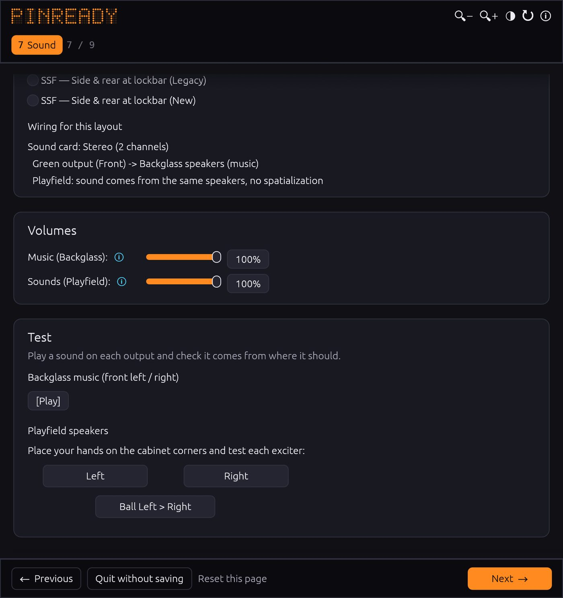
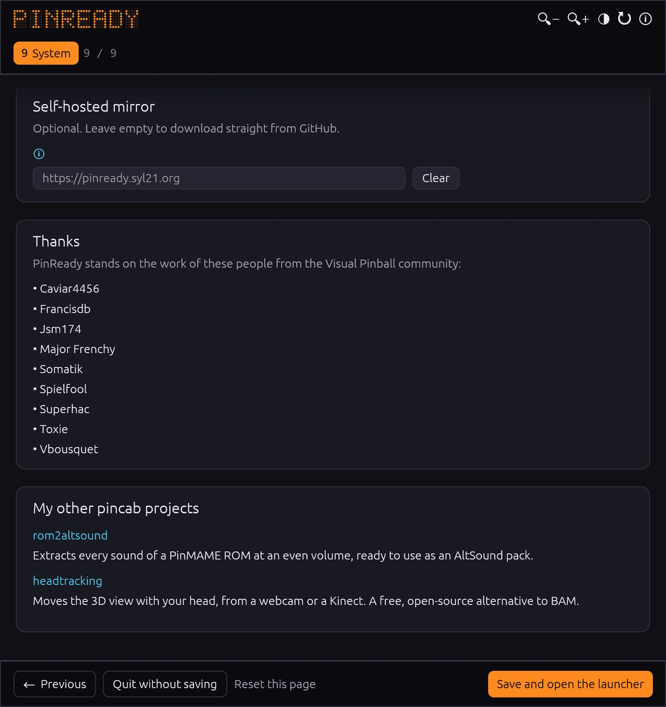

De installatiewizard
De eerste keer dat je PinReady start, loopt een wizard je door negen pagina's. Bij elke optie staat een klein infoteken: houd de muis erboven, of klik erop op een cabinet, voor uitleg in gewone taal.
Je antwoorden worden weggeschreven in VPinballX.ini, het instellingenbestand van Visual Pinball, en de opmerkingen in dat bestand blijven behouden. Bestaat het bestand nog niet, dan laat PinReady Visual Pinball eerst zijn complete standaardbestand aanmaken en voegt daarna jouw keuzes toe. Je kunt de wizard op elk moment weer openen met de knop Configuratie van de launcher of met pinready --config: elk veld toont je huidige instellingen. De meeste instellingen kun je ook tijdens het spelen wijzigen, via het Visual Pinball-menu op F12.
De configuratie resetten gooit elk antwoord weg, zet de globale VPinballX.ini opzij als VPinballX.ini.reset-backup en begint opnieuw bij pagina één. Je tables blijven ongemoeid.
1. Schermen

De eerste pagina toont het herkende systeem (bijvoorbeeld Ubuntu 24.04 LTS · X11 · GNOME), zodat bugmeldingen altijd hun context meekrijgen, laat je de interfacetaal kiezen en installeert Visual Pinball als dat nodig is.
- Aantal schermen: 1 voor een desktopcomputer, 3 of 4 voor een complete pincab (speelveld, backglass, DMD en een optionele topper).
- Rollen: elk scherm staat in de lijst met naam, resolutie, verversingssnelheid (Hz) en fysieke grootte. PinReady stelt een rol voor op basis van de schermgroottes: het grootste wordt het speelveld, daarna de backglass, de DMD en de topper. Wijzig elke rol via de lijst, of zet een scherm op Ongebruikt.
- Weergavemodus: Desktop (in een venster, voor een gewone computer), Cabinet (het speelveld getekend voor een plat liggend scherm, backglass en DMD op hun eigen schermen) of Eén scherm vol (speelveld en backglass op één hoog scherm). Vanaf 2 schermen schakelt hij over op Cabinet, en je kunt dat nog steeds wijzigen.
- Externe DMD (ZeDMD, PinDMD…): vink dit aan als je een fysiek scorescherm hebt; Visual Pinball herkent het wanneer een table start.
- Aanraakscherm uitschakelen: zet de aanraaklaag van VPX uit, handig als het speelveld geen aanraakscherm is of als je de cabinet op afstand bedient.
- Afmetingen van de cabinet: breedte en hoogte van de lockbar, helling van het speelveld, jouw lengte en waar je staat. Sleep de handvatten op de tekening of typ de waarden in; ze geven de 3D-weergave het juiste perspectief.
2. Beeld

Grafische instellingen voor het speelveld. Het advies op de pagina: begin met de standaardwaarden en pas ze daarna aan op je machine.
- Synchronisatie: Geen sync, Verticale sync, Adaptieve sync of Frame pacing, de standaard van Visual Pinball. Elke keuze legt uit welke afweging ze maakt tussen soepelheid en invoervertraging.
- FPS-limiet: standaard Max, wat de verversingssnelheid van je speelveldscherm volgt, zodat geen enkel beeld sneller wordt getekend dan het scherm kan tonen. Druk op Kies een getal om je eigen limiet in te stellen. Kan je scherm meer dan de pagina meldt, stel dan eerst de verversingssnelheid in via de beeldscherminstellingen van je systeem (PinReady kan die niet wijzigen) en kom dan terug.
- Texturen comprimeren (standaard aan) pakt de afbeeldingen van de table samen zodat ze minder videogeheugen gebruiken, ten koste van een iets langere eerste laadtijd van elke table.
- Beeldkwaliteit: supersampling, MSAA, anti-aliasing als nabewerking (FXAA en andere), verscherping, reflecties en maximale teksturgrootte.
- FPS tonen (standaard aan) toont een beeldteller in het spel, handig om je instellingen meteen na de installatie te controleren.
- Ronde bal (standaard aan) voorkomt dat de bal er licht eivormig uitziet als hij snel beweegt. Puur cosmetisch.
- Visuele effecten: zachte schaduwen (ambient occlusion), gloed rond felle lichten, bewegingsonscherpte van de bal, scherpere texturen onder een hoek, reflecties van de hele table, vooraf gerenderde beelden en gladheid van bal en ramps. Elk toont de aanbevolen waarde; als een spel hapert, zet dan eerst de effecten onderaan de lijst uit.
3. 3D

Twee optionele blokken, beide standaard uit omdat een cabinet ze niet nodig heeft.
- Virtual reality (VR): speel met een headset. Je hebt een headset nodig en een VR-programma (een OpenXR-runtime zoals SteamVR of Monado) dat op de computer draait. Eenmaal ingeschakeld kies je wanneer VR start, de verversingssnelheid van de headset, wat het bureaublad intussen toont en de audioroutering.
- Stereoscopisch 3D: een 3D-beeld voor een 3D-televisie of -bril. Eenmaal ingeschakeld kies je het 3D-formaat en stel je de oogafstand, helderheid en kleurverzadiging in.
4. Besturing

Elke Visual Pinball-actie heeft twee kolommen, Toetsenbord en Joystick, en beide werken naast elkaar. Klik op Toewijzen en druk op een toets of knop: een toets vult de toetsenbordkolom, een joystickknop de joystickkolom. Alle invoer automatisch toewijzen loopt in één keer alle acties af. Essentiële acties (flippers, MagnaSave, start, credit, bal lanceren…) staan bovenaan; geavanceerde acties zijn één klik verder. PinReady waarschuwt je als een toets al door een andere actie wordt gebruikt.
Besturingsborden voor flipperkasten. Zodra een Pinscape KL25Z-, Pinscape Pico-, DudesCab- of PinOne-bord wordt herkend, kiest PinReady het bijpassende profiel en vult de joystickkolom met de fabrieksindeling van de knoppen van het bord; Visual Pinball regelt dan zelf de plunger en de nudge via de versnellingsmeter. Kies Geen om elke knop zelf toe te wijzen. Een herkende gamepad kan ook gebruikt worden voor de flippers, de plunger en de nudge.
KL25Z (KL Shield V5.1 / Brain / Rig Master)
| Knop | Label op het bord | VPX-actie |
|---|---|---|
| 0 | START | Start |
| 1 | EXTRA-B | ExtraBall |
| 2 | COIN1 | Credit1 |
| 3 | COIN2 | Credit2 |
| 4 | L BALL | LaunchBall |
| 5 | EXIT | ExitGame |
| 7 | L FLIPP | LeftFlipper + LeftStagedFlipper |
| 8 | R FLIPP | RightFlipper + RightStagedFlipper |
| 9 | L MAGNA | LeftMagna |
| 10 | R MAGNA | RightMagna |
| 11 | FIRE | Lockbar |
| 13 | DOOR | CoinDoor |
| 14 | SERVICE EXIT | Service1 |
| 15 | SERVICE - | Service2 |
| 16 | SERVICE + | Service3 |
| 17 | ENTER | Service4 |
| 19 | VOL- | VolumeDown |
| 20 | VOL+ | VolumeUp |
Pinscape Pico (OpenPinballDevice)
| Knop | Label op het bord | VPX-actie |
|---|---|---|
| 0 | Start | Start |
| 1 | Afsluiten | ExitGame |
| 2 | Extra bal | ExtraBall |
| 3 | Munt 1 | Credit1 |
| 4 | Munt 2 | Credit2 |
| 5 | Munt 3 | Credit3 |
| 6 | Munt 4 | Credit4 |
| 7 | Bal lanceren | LaunchBall |
| 8 | Vuren | Lockbar |
| 9 | Linker flipper | LeftFlipper |
| 10 | Rechter flipper | RightFlipper |
| 11 | Bovenste linker flipper | LeftStagedFlipper |
| 12 | Bovenste rechter flipper | RightStagedFlipper |
| 13 | MagnaSave links | LeftMagna |
| 14 | MagnaSave rechts | RightMagna |
| 16 | Slam tilt | SlamTilt |
| 17 | Muntdeur | CoinDoor |
| 18 | Service annuleren | Service1 |
| 19 | Service omlaag | Service2 |
| 20 | Service omhoog | Service3 |
| 21 | Service bevestigen | Service4 |
| 22 | Nudge links | LeftNudge |
| 23 | Nudge vooruit | CenterNudge |
| 24 | Nudge rechts | RightNudge |
| 25 | Volume omhoog | VolumeUp |
| 26 | Volume omlaag | VolumeDown |
DudesCab (Arnoz)
| Knop | Label op het bord | VPX-actie |
|---|---|---|
| 0 | Start | Start |
| 1 | Extra bal | ExtraBall |
| 2 | Munt 1 | Credit1 |
| 3 | Munt 2 | Credit2 |
| 4 | Bal lanceren | LaunchBall |
| 5 | Terug | ExitGame |
| 7 | Flipper links | LeftFlipper + LeftStagedFlipper |
| 8 | Flipper rechts | RightFlipper + RightStagedFlipper |
| 9 | Magna links | LeftMagna |
| 10 | Magna rechts | RightMagna |
| 12 | Vuren | Lockbar |
| 13 | Deur | CoinDoor |
| 14 | ROM afsluiten | Service1 |
| 15 | ROM - | Service2 |
| 16 | ROM + | Service3 |
| 17 | ROM bevestigen | Service4 |
| 18 | VOL - | VolumeDown |
| 19 | VOL + | VolumeUp |
CSD PinOne
| Knop | Label op het bord | VPX-actie |
|---|---|---|
| 0 | VPX 1 | RightFlipper |
| 1 | VPX 2 | RightMagna |
| 2 | VPX 3 | LeftFlipper |
| 3 | VPX 4 | LeftMagna |
| 4 | VPX 5 | ExtraBall |
| 5 | VPX 6 | Start |
| 6 | VPX 7 | Credit1 |
| 7 | VPX 8 | ExitGame |
| 8 | VPX 9 | Lockbar |
| 15 | VPX 16 | VolumeUp |
| 16 | VPX 17 | VolumeDown |
| 17 | VPX 18 | CoinDoor |
| 18 | VPX 19 | Service1 |
| 19 | VPX 20 | Service2 |
| 20 | VPX 21 | Service3 |
| 21 | VPX 22 | Service4 |
| 23 | VPX 24 | LaunchBall |
De knopnummers zijn die welke SDL meldt, geteld vanaf 0. Knoppen die een profiel niet toewijst, staan niet in de lijst.
5. Accessoires

DOF-effecten (lichten en toys)
VPX 10.8.1 standalone bevat DOF (Direct Output Framework), dat de solenoïden, lichten, shakermotor, knocker of zwaailicht van een cabinet aanstuurt. Het heeft alleen een configuratie nodig die je hardware beschrijft. De pagina loopt je erdoorheen:
- Maak een gratis account aan op de VPUniverse ConfigTool.
- Maak een table die bij je cabinet past, voeg het uitvoersysteem toe (Pinscape, LedWiz, PinOne, DudesCab, PacLed, TeensyStripController…) en koppel je apparaten aan de uitgangen.
- Klik op Genereren, download de zip en pak die uit in de doelmap: de knop Map openen in bestandsbeheer brengt je er direct naartoe.
- Zet DOF aan: Visual Pinball wordt geleverd met alle plug-ins uitgeschakeld, dus er gebeurt niets in het spel tot je dat doet.
PinReady kan ook via USB naar je uitvoerbord zoeken en je vertellen welk controllertype je in de ConfigTool moet kiezen. Op Linux toont, kopieert of installeert hij de udev-regels die toegang tot het bord geven. Een uitvoertester die elke uitgang om de beurt activeert, met een ingebouwde veiligheidsstop, draait voorlopig alleen op een simulator.
Head tracking
Voor cabinets met een Kinect of een camera op de backglass of topper: het perspectief van de table volgt je hoofd. Met één klik download je de head tracking-plug-in en de demo ervan, schakel je de plug-in in, zet je Visual Pinball in de Venster-weergavemodus die ze nodig heeft, en open je de demo zodat je de cameradrivers kunt installeren en kunt controleren of je gevolgd wordt. Niet beschikbaar op Intel-Macs.
6. Tilt / Nudge


Instellingen voor de versnellingsmeter die detecteert wanneer je aan de cabinet schudt (nudge).
- Type nudge-sensor: Game Controller voor een gamepadstick, Intent Sensor voor cabinets met een versnellingsmeterbord zoals Pinscape of DudesCab (negeert kleine trillingen en maakt van een echte duw een nudge), Cabinet Sensor voor een snelle, schone sensor waarvan de metingen worden toegepast zoals ze gemeten zijn.
- Sterkte: hoe hard een schok de bal duwt. In de praktijk de enige instelling die het afstellen waard is.
- Dode zone: kleine metingen onder dit niveau worden genegeerd, zodat trillingen en sensorruis de bal niet bewegen.
- Bereik van de versnellingsmeter: een eigenschap van je bord, geen voorkeur. PinReady leest het van het bord af als het bord het doorgeeft, en waarschuwt je als de gekozen waarde niet overeenkomt.
- TILT-drempel: hoe hard je mag nudgen voordat het spel een tilt geeft.
Schud aan de cabinet en kijk naar de live weergave: een stip toont elke schok tegenover ringen voor de dode zone, de nudge-drempel en de tilt; de rode ring overschrijden betekent TILT. PinReady houdt ook de gemeten piek bij, meldt wanneer de tilthoek buiten het bereik van de sensor valt en vraagt je te controleren in welke richting het bord gemonteerd is, want een verkeerd gedraaid bord verwisselt of spiegelt de nudge-richtingen.
De pagina simuleert wat Visual Pinball met elke nudge doet, met het eigen cabinetmodel en de standaardwaarden van VPX. Een blauwe stip toont de virtuele slinger: VPX tilt op de slinger, die een reeks stoten optelt, terwijl de rode stip alleen de sensor is. De slinger raakt de tiltcirkel precies wanneer VPX zou tilten. Om het te proberen, wieg je de cabinet zijwaarts in een reeks flinke klappen, elk iets harder.
Hoe VPX een nudge leest
- Zijwaarts is gevoeliger dan van voor naar achter. VPX vermenigvuldigt de zijwaartse meting met 4/3, en een zijwaartse duw is meestal makkelijker te geven dan een duw naar voren.
- Een duw telt, een trek nooit. VPX zoekt naar de intentie om de cabinet van je af te duwen. Wat naar je toe komt wordt op nul gezet, hoe hard ook, dus de cabinet die na je duw terugzwaait is nooit een tweede nudge: hij komt alleen tot rust. De pagina tekent deze zone aan de kant van de speler.
- Een klap telt pas boven de drempel (1 m/s²). VPX bouwt dan een korte duw van 25 ms op, even hard als de gemeten piek; de ruwe meting van de sensor wordt daarna niet meer gebruikt.
- Een reeks klappen telt op in de slinger, dus vier klappen achter elkaar kunnen een tilt geven waar één dat nooit zou doen.
De wiskunde erachter
De pagina toont de formules die VPX berekent, één blok per sensortype (het gekozen type staat open), daarna het cabinetmodel en het schietlood dat ze delen. Eenheden: m/s² voor versnellingen, ms voor tijden, ° voor de tilthoek. De blokken staan in de applicatie zelf, op de pagina Nudge & tilt.
7. Audio

Visual Pinball speelt geluid af op twee apparaten, en PinReady toont je geluidskaarten voor elk ervan:
- Backglass: muziek, stemmen en algemene spelgeluiden.
- Speelveld: de mechanische geluiden (flippers, bumpers, rollende bal). Voor surround of SSF moet dit de meerkanaalsuitgang zijn.
Uitvoermodus speelveld. PinReady kiest vooraf een modus op basis van het aantal kanalen dat hij herkent en toont een schema van de luidsprekerindeling met de vereiste bedrading.
| Modus | Voor |
|---|---|
| 2 kan. — Stereo voor | Gewone stereo, beide luidsprekers aan de voorkant van de cabinet. |
| 2 kan. — Stereo achter (lockbar) | Gewone stereo, beide luidsprekers bij de lockbar, dicht bij de speler. |
| 5.1 — Achter bij de lockbar | Voegt positionering van voor naar achter toe; achterkanalen bij de lockbar. Vereist een geluidskaart met 6 kanalen. |
| 5.1 — Voor bij de lockbar | Hetzelfde, met de voorkanalen bij de lockbar. Kies degene die bij je bedrading past. |
| SSF — Zij & achter bij de lockbar (Legacy) | Surround Sound Feedback met de oudere mix. |
| SSF — Zij & achter bij de lockbar (New) | Surround Sound Feedback met de nieuwere mix, aanbevolen. |
Bedrading voor een 7.1-geluidskaart, de aanbevolen SSF-opstelling (de kleuren van de aansluitingen kunnen per kaart verschillen):
| Aansluiting | Kanalen | Aansluiting op de cabinet |
|---|---|---|
| Groen (Front) | FL / FR | Backglass-luidsprekers (muziek) of 2.1-systeem |
| Zwart (Rear) | BL / BR | Exciters boven in het speelveld (kant van de backglass) |
| Grijs (Side) | SL / SR | Exciters onder in het speelveld (lockbar / kant van de speler) |
| Oranje (Center/Sub) | FC / LFE | Subwoofer of bass shaker (optioneel) |
Volumes en tests. Stel de volumes van de muziek en het speelveld in en controleer daarna je bedrading: test 1 speelt muziek in een lus op de backglass met een links/rechts-balans; test 2 speelt om de beurt een geluid op elke speelveldluidspreker en laat een rollende bal van boven naar beneden en van links naar rechts bewegen. Beweegt de bal verkeerd van voor naar achter, wijzig dan de uitvoermodus; van links naar rechts, controleer dan de bedrading. Een geluidskaart met maar 3 aansluitingen (groen, roze, blauw) kan vaak naar 5.1 of 7.1 worden omgeschakeld: zie de gidsen voor Linux, Windows, macOS.
8. Tables

Kies de map met je tables, één submap per table: de indeling die Visual Pinball 10.8.1 gebruikt.
Tables/
└── Table Name/
├── Table Name.vpx table file (required)
├── Table Name.directb2s backglass (optional)
├── Table Name.ini per-table settings (optional)
├── Table Name.vbs script patch (optional)
├── medias/launcher.png launcher picture (optional)
├── pinmame/roms/<rom>.zip ROM (required for ROM tables)
├── altsound/<rom>/ alt-sound pack (optional)
├── pupvideos/<rom>/ PinUP Player videos (optional)
├── serum/<rom>/<rom>.crz Serum colorization (optional)
└── vni/<rom>/<rom>.vni VNI colorization, with .pal (optional)DMD-kleuring in de formaten Serum (.crz) en VNI (.vni + .pal) wordt ondersteund; propriëtaire formaten zoals .pac niet.
- Breng je collectie over naar de nieuwe indeling. Wijs PinReady naar één map (een tablecollectie, een oude VPX-installatie, zelfs een hele schijf). Alles erin wordt geïndexeerd en daarna krijgt elke table een eigen map met de ROM, backglass, PUP-pack, alt-sound, kleuring en muziek die erbij horen. Hebben je tables al elk een eigen map, dan blijven ze waar ze zijn en worden ontbrekende bestanden toegevoegd. Doe eerst een proefrun om een voorbeeld te zien en kies dan voor kopiëren (veilig) of verplaatsen van de bestanden.
- Compatibiliteit met Visual Pinball Standalone (standaard uit): PinReady herkent het script dat in elke table is ingebouwd en plaatst, als Le-Syl21/vpx-standalone-scripts er een patch voor heeft, de gepatchte
.vbsnaast de.vpx. Een eigen.vbsvan jou blijft bewaard als<table>.pre_standalone.vbs. - Catalogusverrijking (standaard aan): koppelt elke table aan de Virtual Pinball Spreadsheet en downloadt een backglass-afbeelding en een audiojingle van VPinMediaDB in de map
mediasvan de table. De eerste synchronisatie downloadt ongeveer 7 MB catalogusgegevens, plus een paar MB per gekoppelde table. Zet dit uit op een offline cabinet.
9. Systeem

Optionele gemakken, het best geschikt voor een speciale cabinet:
- PinReady automatisch starten bij het opstarten.
- Menusnelkoppelingen en koppeling van
.vpx-bestanden: voegt PinReady en Visual Pinball toe aan het toepassingsmenu (GNOME, KDE of XFCE op Linux, Launchpad op macOS, Startmenu op Windows) en opent.vpx-bestanden met Visual Pinball. Vink het uit en rond de wizard opnieuw af om het te verwijderen. - Bureaubladsnelkoppeling en, op GNOME, vastmaken aan het dock.
- Eigen mirror: haal de scriptpatches en de mediadatabase van je eigen server in plaats van van GitHub.